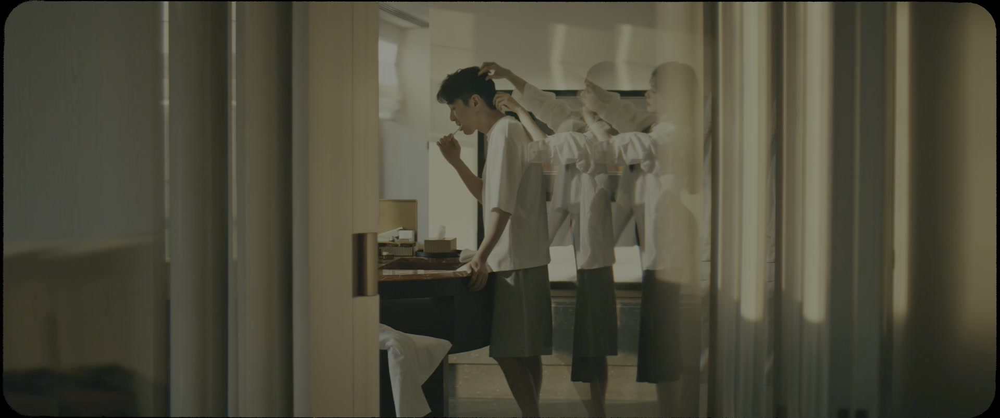
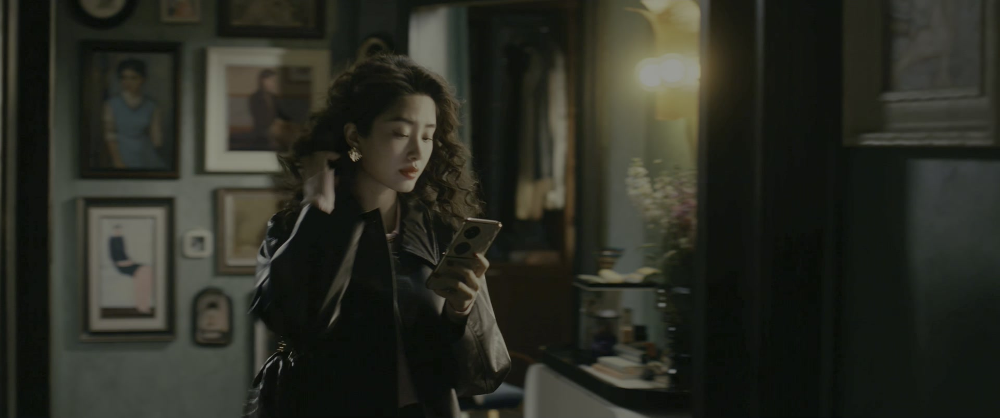
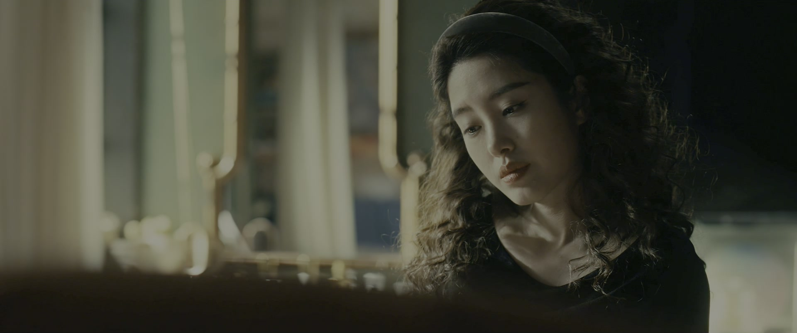
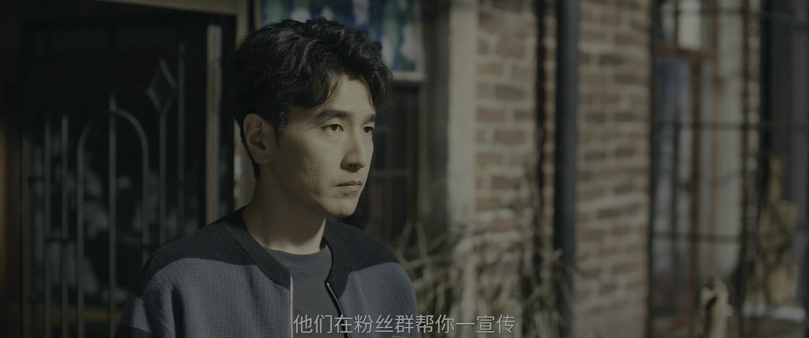
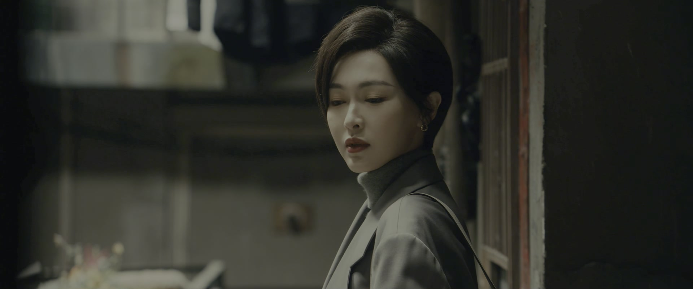
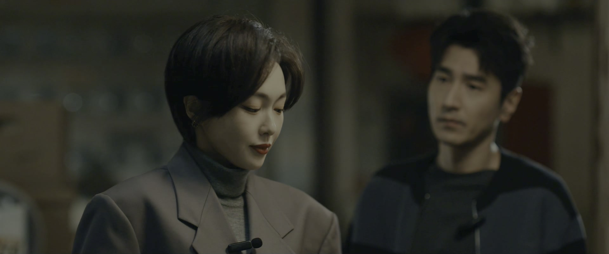
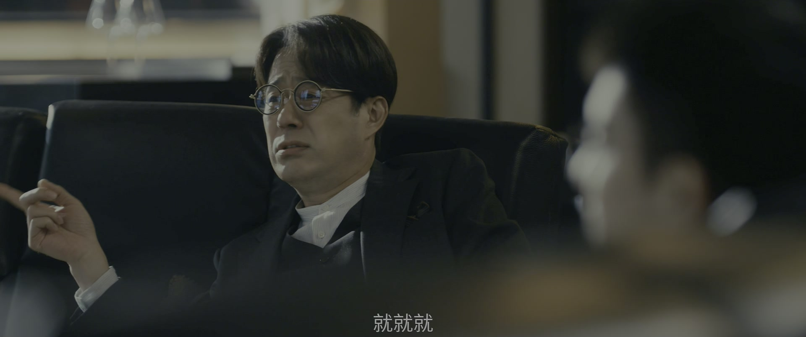
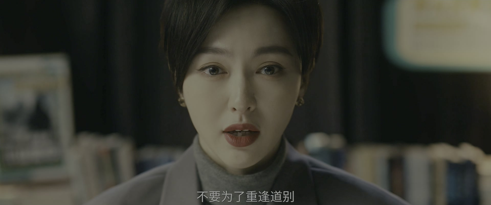
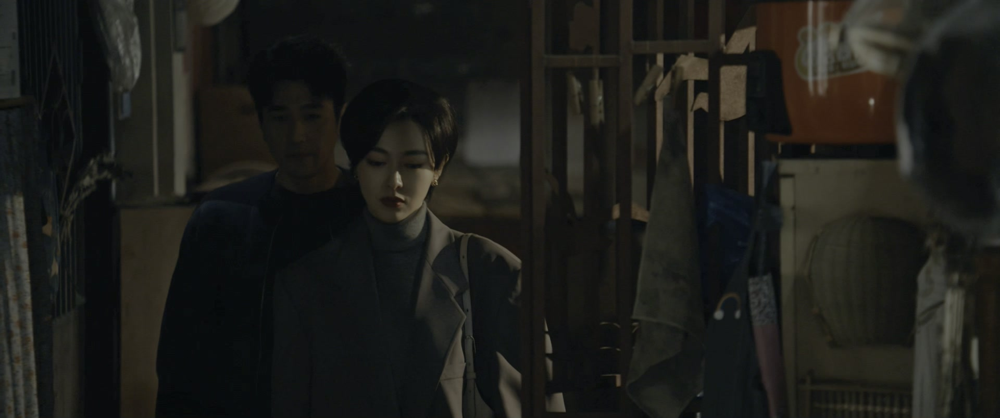
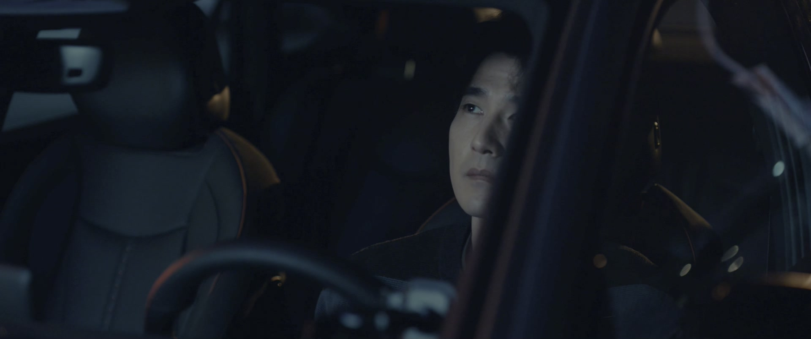

想要孩子的执念，不该以透支自己为代价
情境：周媚每天打促排卵针，情绪崩溃大哭，仍想再要一对双胞胎。
遇到这种情况，可以这样做
- 身体的警报响时，别用「为了家」说服自己。
- 生育是两个人的决定，不该独自硬扛。
- 孩子该是爱的延续，不是执念的出口。

Drama Recap · 剧情图文总结
第 31 集 · 最后的直播
孤烟在何韩以前住的房子里签约顶麒网，彩蛋官宣「为三三捉刀的不是别人，正是孤烟」；展翘和何韩进直播间为《山鬼令》背水一战——「这是第一次，也是最后一次直播推荐小说，因为他值得。」电话那头，妈妈肿瘤扩散转移到大脑；这头，何韩立下flag：前额叶一定会超过我。
孤烟在何韩以前住的房子里，签下了顶麒网的合约。彩蛋官宣的那一刻，「三三」这个名字被钉在他头上，榜单前两位都成了他的作品。展翘和何韩则把自己关进直播间，为《山鬼令》做「第一次也是最后一次」的赌命推荐。电话在这时响了：妈妈昏迷，肿瘤已经转移到大脑。她擦掉眼泪回到镜头前，把《山鬼令》读完，才去医院。
第31集，孤烟签约，直播背水一战。 赵兰心团队连夜筹备孤烟的签约直播：提前两小时接人、布置酒店直播间、排专访流程。书粉群里，「三三就是孤烟」的预热已经开始。范叔看直播看得心寒：「我一直观察孤烟的表情，我发现他一点愧疚感都没有。」他自嘲自己养了只白眼狼。
剧里的鸡毛蒜皮，往往是人生的缩影。这些情节不只是故事——当你在现实中遇到同样的处境时，它们能提醒你：先做什么、别做什么、怎么说才有效。
情境：周媚每天打促排卵针，情绪崩溃大哭，仍想再要一对双胞胎。
情境：孤烟在何韩以前住的房子里签约顶麒网，官宣三三身份，范叔自嘲养了白眼狼。
情境：展翘让何韩上直播，咪咪爆料何韩往事、炒展翘与前额叶的八卦来引流。
情境：展翘在直播间说这是第一次也是最后一次直播推书，「因为他值得」。
情境：展翘在直播间朗读《山鬼令》，读到自己落泪。
情境：妈妈肿瘤转移到大脑，展翘坚持播完直播才去医院。

赵兰心团队为明天的签约直播做最后准备：背板安排好了，签约流程给赵总过目，「明天早上我们会提前两个小时接孤烟」。
酒店专门布置了直播间，签约后还有一场直播专访。「希望可以保住第二名吧。」有人自言自语——顶麒网榜单上的位置，早已暗流涌动。
关键台词 · KEY QUOTES
周媚在医院打促排卵针，医生提醒副作用：「打针之后情绪波动会比较大，脆弱啊，低迷啊，忽然伤心流泪啊，焦虑啊。」
她的爸爸被妈妈赶出家门，无路可去，来找她借住。「你要没地方住，你就先住这儿吧。」「我住这儿，你妈知道吗？」「她不知道。」爸爸感叹自己「一直觉得自己不会老」，周媚丢下一句「我要上班去」。
关键台词 · KEY QUOTES
茞星改稿组彻夜冲刺，展翘指点作者：「特殊时期得加节奏火力了，它原来节奏太慢了，现在只能靠情绪把它拉起来。不留旁白，只留炮弹。」排名还是第二名。
周媚的情绪在针剂作用下彻底失控，她哭着解释：「医生说我的卵泡成熟度不够，如果想要尽快要孩子，就必须要打这个针。现在是一天一针，我有可能一天两针。」她说自己从五六岁起就不怎么哭了，「我感觉要把这辈子的眼泪都哭干」。
关键台词 · KEY QUOTES
范叔一夜没睡：「我等不到明天了。我看着前额叶骑在我头上，我根本就睡不着觉。我要你在我睡觉之前，把他打回至少第三位。」
手下提醒：孤烟明天跟赵兰心签约，「三三就是孤烟的另一个马甲」的消息已经开始预热。范叔拍板：通知作者，明天继续加更。
关键台词 · KEY QUOTES

孤烟在顶麒网签约，直播地点选在何韩以前住的房子里。「强强联手，喜结连理」，蛋糕推上来了，孤烟站在人群里，看不出愧疚。
彩蛋环节，顶麒网正式官宣：「为三三捉刀的不是别人，正是孤烟。也就是说，现在榜单上排名第一和第二的作品，都来自于孤烟之手。」范叔在屏幕前自嘲：「人总是会为自己所做所为，去找一些合理的理由。」
关键台词 · KEY QUOTES

何韩的网课销量远不达预期。咪咪劝他：「卖课卖课，先得吆喝起来。你不愿意直播宣传，别人怎么知道你这课程好不好呢？我那几十万的存量粉丝一宣传，转化效果肯定非常好。」
何韩松口：今天就能上播。咪咪问他要怎么配合，何韩反过来挑衅她：「你不是说你有推广能力吗？」咪咪放大招：「比如说，爆料你我林展翘之间的三角关系。」
关键台词 · KEY QUOTES

直播间里，咪咪爆料何韩的前任往事：「我跟他谈恋爱的时候，只要我喜欢的东西，他都会买给我。」观众抛出炸弹：「前额叶是林展翘的新男友吗？」展翘被请上镜头：「其实我跟前额叶，是在相亲网上认识的。」
展翘以《山鬼令》亲生编辑的身份卖力推销：「我们整个故事，全部每一个时空，都是根据神话故事作为根基去创作的。」直播间送出上百份读书卡，全本打对折。
关键台词 · KEY QUOTES

展翘接到爸爸的电话，声音冷得吓人：「你妈没有生命危险，这是个好消息。坏消息是，你妈现在在医院昏迷，刚做了核磁，医生说可能是肿瘤扩散，已经转移到了大脑。」
爸爸说「你来了也帮不上忙」，展翘却不肯走：「我爸刚刚都说了，我想就算过去，也是什么忙都帮不了。」何韩劝她：「那也得去啊。」她回到直播间，把眼泪咽回去。
关键台词 · KEY QUOTES

展翘回到直播间，声音发颤：「我们做直播推荐《山鬼令》，不是为了直播赚钱，纯粹是出自于对他的喜爱。而且以后不会了，这是第一次，也是最后一次直播推荐小说，因为他值得。」
观众问前额叶会不会是何韩的接班人，何韩开口就惊人：「我的接班人？那怎么可能——他会超过我。我今天就把话放这儿了。为了立这个FLAG，我个人再加收一百张《山鬼令》全本读书卡。」
关键台词 · KEY QUOTES

何韩把镜头交给展翘，她在直播间当众朗读《山鬼令》：「初遥一生，为燃亮独自面对山海兽，护住了所有人……季大说不出叫他放弃的话，因为他没有资格去阻止一个战士，选择尊严地奋斗到最后。」
读着读着，展翘哭了。同事在屏幕外看得明白：「我觉得他哭的不是《山鬼令》的内容。他哭的是，他再怎么努力，公司也维持不下去了。」
关键台词 · KEY QUOTES

签约之后，孤烟跟茞星的人划清界限：「要没什么事情，你们先回去吧，我还会写稿的。」有人嘀咕：住上大套间，说话都不一样了。
范叔问展翘：「现在我就是需要考虑，我到底要不要赌一把，把公司的最后一份钱全都投进去，然后才有个认输。还是说，现在就要原地解散。」展翘想起孤烟一个人写两本小说的处境：「她虽然现在是榜一榜二，但后面肯定会下火的。」
关键台词 · KEY QUOTES

爸爸发来消息，妈妈情况不好。展翘去医院前对何韩说：「坚强有时只是一场没有奖励的比赛。何韩拯救不了我，就像何为去世的时候，我也拯救不了她。但至少这一场无法言说的恐惧和失落，我们知道对方感同身受。」
茞星解散已成定局。展翘把前额叶转给赵兰心的公司，作者不肯接受这个安排：「《山鬼令》没有他们说的这么好，那是因为有你，你是费了很大的功夫把我捧上去的。」展翘只说：「他是我的死对头，所以他一定不是为了帮我，才接受《山鬼令》的。」
关键台词 · KEY QUOTES
为《山鬼令》破例上直播，「第一次也是最后一次」；接到妈妈病危电话仍坚持播完；决定赌上公司最后一份钱。
为了展翘进直播间，立flag「他会超过我」，加送一百张读书卡。
与赵兰心签约，直播官宣「为三三捉刀的不是别人，正是孤烟」；搬进顶麒网大套间，跟茞星划清界限。
操盘孤烟签约直播与三三官宣，把孤烟架上榜单前两位。
直播前一夜「等不到明天」；看着孤烟签约直播，自嘲「养了只白眼狼」。
打促排卵针，情绪崩溃，「要把这辈子的眼泪都哭干」；收留了被赶出家门的爸爸。
被展翘捧上榜前三；公司解散后被转交给赵兰心，决心「为了热爱继续写」。
顶麒网直播彩蛋，把孤烟架上榜单前两位的传奇之位。
展翘在直播间哽咽着给《山鬼令》定调：「因为他值得。」
何韩在直播间立flag，加送一百张读书卡，观众弹幕齐呼「杀疯了」。
展翘读《山鬼令》读到泪流，直播间里都是她撑不住的痕迹。
范叔看着孤烟签约直播，一句自嘲道尽心寒。
妈妈病危，展翘坚持播完才去医院，何韩在身后陪她。
肿瘤扩散转移大脑，昏迷未醒，这条线直指后续的家庭风暴。
展翘把茞星最后的资金投进《山鬼令》，公司已站在解散边缘。
前额叶被转给赵兰心，展翘清楚「她一定不是为了帮我」。
范叔断言孤烟一个人写两本书，榜一榜二「后面肯定会下火」。
「他会超过我」说出口的那一刻，就注定要被反复检验。